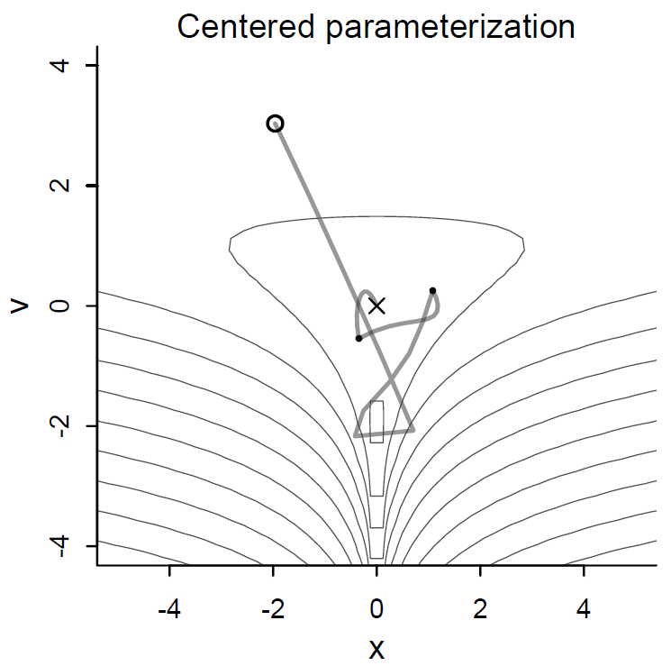
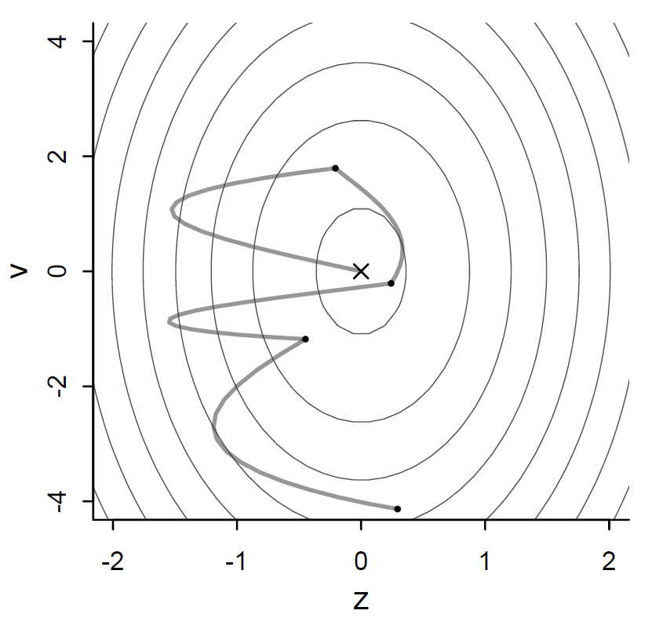
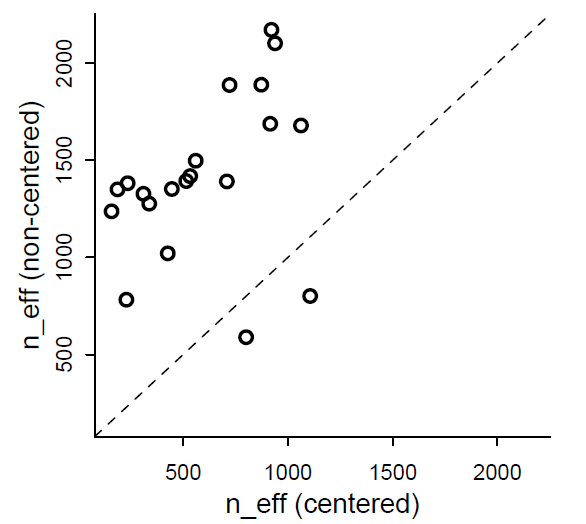

Original Model: \[ \begin{align} L &\sim \text{Binomial}(1, p) \\ \text{logit}(p) &= \alpha_{\text{actor}} + \beta_{\text{treatment}} \\ \alpha &\sim dnorm(0, 1.5) \\ \beta &\sim dnorm(0, 0.5) \end{align} \]
Model code:
set.seed(13)
mdl_chimp.2 <- ulam(
alist(
pulled_left ~ dbinom(1, p),
logit(p) <- a[actor] + g[block_id] + b[treatment],
b[treatment] ~ dnorm(0, 0.5),
## adaptive priors
a[actor] ~ dnorm(a_bar, sigma_a),
g[block_id] ~ dnorm(0, sigma_g),
## hyper-priors
a_bar ~ dnorm(0, 1.5),
sigma_a ~ dexp(1),
sigma_g ~ dexp(1)
), data=dat_list, chains = 4, cores = 4, log_lik = TRUE)Model 1 (the old one)
## mean sd 5.5% 94.5% n_eff Rhat4
## a[1] -0.45 0.33 -0.98 0.08 507 1.00
## a[2] 3.85 0.74 2.75 5.08 1223 1.00
## a[3] -0.75 0.33 -1.28 -0.21 521 1.00
## a[4] -0.76 0.35 -1.35 -0.20 536 1.00
## a[5] -0.45 0.34 -0.99 0.08 503 1.00
## a[6] 0.48 0.33 -0.06 1.01 406 1.00
## a[7] 1.96 0.42 1.29 2.66 590 1.01
## b[1] -0.04 0.29 -0.51 0.44 414 1.01
## b[2] 0.48 0.29 0.01 0.95 518 1.00
## b[3] -0.38 0.30 -0.85 0.09 438 1.01
## b[4] 0.37 0.29 -0.08 0.85 449 1.00Model 2 (multilevel)
## mean sd 5.5% 94.5% n_eff Rhat4
## b[1] -0.14 0.30 -0.58 0.33 565 1.01
## b[2] 0.39 0.30 -0.06 0.88 456 1.01
## b[3] -0.48 0.31 -0.96 0.02 571 1.01
## b[4] 0.27 0.30 -0.20 0.77 477 1.02
## a[1] -0.35 0.37 -0.96 0.24 527 1.01
## a[2] 4.63 1.22 3.07 7.00 898 1.01
## a[3] -0.65 0.37 -1.26 -0.07 433 1.01
## a[4] -0.65 0.38 -1.26 -0.07 550 1.01
## a[5] -0.36 0.36 -0.93 0.19 502 1.01
## a[6] 0.59 0.37 0.00 1.17 443 1.01
## a[7] 2.11 0.46 1.39 2.86 698 1.01
## g[1] -0.17 0.22 -0.59 0.07 603 1.00
## g[2] 0.03 0.18 -0.23 0.32 963 1.00
## g[3] 0.05 0.17 -0.20 0.34 796 1.00
## g[4] 0.01 0.18 -0.28 0.30 962 1.00
## g[5] -0.03 0.17 -0.33 0.24 885 1.00
## g[6] 0.11 0.19 -0.12 0.44 628 1.00
## a_bar 0.60 0.70 -0.49 1.74 958 1.00
## sigma_a 1.97 0.61 1.21 3.03 1278 1.00
## sigma_g 0.21 0.16 0.03 0.53 330 1.01Model code:
set.seed(13)
mdl_chimp.3 <- ulam(
alist(
pulled_left ~ dbinom(1, p),
logit(p) <- a[actor] + b[treatment],
b[treatment] ~ dnorm(0, 0.5),
## adaptive priors
a[actor] ~ dnorm(a_bar, sigma_a),
## hyper-priors
a_bar ~ dnorm(0, 1.5),
sigma_a ~ dexp(1)
), data=dat_list, chains = 4, cores = 4, log_lik = TRUE)Compare the models:
Model 3 works is slightly better than the original model, and model 2 (with the block clusters) is worst, because it overfits (see the pWAIC penalty).
What is the difference between models 1 and 3?
adapt_delta closer to 1.
adapt_delta is the target acceptance rate used in the
tuning (warm-up) phase to adjust the parameters.adapt_delta closer to 1 leads to more accurate
sampling, but slows Stan down.mdl_funnel <- ulam(
alist(
v ~ normal(0, 3),
x ~ normal(0, exp(v))
), data = list(N = 1), chains = 4, cores = 4)## mean sd 5.5% 94.5% n_eff Rhat4
## v 0.98 1.90 -1.68 4.45 29 1.17
## x -2.66 26.77 -34.55 16.12 168 1.02## 154 of 2000 iterations ended with a divergence (7.7%).
## Try increasing 'adapt_delta' to remove the divergences.Why do divergences happen?
Potential-energy surface:


Original model:
mdl_funnel <- ulam(
alist(
v ~ normal(0, 3),
x ~ normal(0, exp(v))
), data = list(N = 1), chains = 4, cores = 4)## mean sd 5.5% 94.5% n_eff Rhat4
## v 0.98 1.90 -1.68 4.45 29 1.17
## x -2.66 26.77 -34.55 16.12 168 1.02## 154 of 2000 iterations ended with a divergence (7.7%).
## Try increasing 'adapt_delta' to remove the divergences.Non-centered model:
mdl_funnel_nc <- ulam(
alist(
v ~ normal(0, 3),
z ~ normal(0, 1),
gq> real[1]:x <<- z*exp(v)
), data=list(N=1) , chains=4 )## mean sd 5.5% 94.5% n_eff Rhat4
## v 0.03 2.99 -4.85 4.63 1340 1
## z -0.03 1.01 -1.70 1.56 1517 1
## x -87.50 1966.94 -24.11 17.84 1034 1## 0 of 2000 iterations ended with a divergence.## mean sd 5.5% 94.5% n_eff Rhat4
## b[1] -0.14 0.30 -0.58 0.33 565 1.01
## b[2] 0.39 0.30 -0.06 0.88 456 1.01
## b[3] -0.48 0.31 -0.96 0.02 571 1.01
## b[4] 0.27 0.30 -0.20 0.77 477 1.02
## a[1] -0.35 0.37 -0.96 0.24 527 1.01
## a[2] 4.63 1.22 3.07 7.00 898 1.01
## a[3] -0.65 0.37 -1.26 -0.07 433 1.01
## a[4] -0.65 0.38 -1.26 -0.07 550 1.01
## a[5] -0.36 0.36 -0.93 0.19 502 1.01
## a[6] 0.59 0.37 0.00 1.17 443 1.01
## a[7] 2.11 0.46 1.39 2.86 698 1.01
## g[1] -0.17 0.22 -0.59 0.07 603 1.00
## g[2] 0.03 0.18 -0.23 0.32 963 1.00
## g[3] 0.05 0.17 -0.20 0.34 796 1.00
## g[4] 0.01 0.18 -0.28 0.30 962 1.00
## g[5] -0.03 0.17 -0.33 0.24 885 1.00
## g[6] 0.11 0.19 -0.12 0.44 628 1.00
## a_bar 0.60 0.70 -0.49 1.74 958 1.00
## sigma_a 1.97 0.61 1.21 3.03 1278 1.00
## sigma_g 0.21 0.16 0.03 0.53 330 1.01## 4 of 2000 iterations ended with a divergence (0.2%).
## Try increasing 'adapt_delta' to remove the divergences.set.seed(13)
mdl_chimp.4 <- ulam(mdl_chimp.2, chains = 4, cores = 4,
control = list(adapt_delta = 0.99))## mean sd 5.5% 94.5% n_eff Rhat4
## a_bar 0.58 0.74 -0.58 1.78 907 1.00
## sigma_a 2.05 0.66 1.23 3.27 868 1.01
## sigma_g 0.19 0.18 0.02 0.49 222 1.00## 1 of 2000 iterations ended with a divergence (0.05%).
## Try increasing 'adapt_delta' to remove the divergences.set.seed(13)
mdl_chimp_nc <- ulam(
alist(
pulled_left ~ dbinom(1, p) ,
logit(p) <- a_bar + z[actor] * sigma_a +
x[block_id] * sigma_g +
b[treatment],
b[treatment] ~ dnorm(0, 0.5),
z[actor] ~ dnorm(0, 1),
x[block_id] ~ dnorm(0, 1),
a_bar ~ dnorm(0, 1.5),
sigma_a ~ dexp(1),
sigma_g ~ dexp(1),
gq> vector[actor]:a <<- a_bar + z * sigma_a,
gq> vector[block_id]:g <<- x * sigma_g
), data = dat_list, chains = 4, cores = 4)## mean sd 5.5% 94.5% n_eff Rhat4
## a_bar 0.55 0.73 -0.65 1.67 535 1.00
## sigma_a 2.01 0.64 1.21 3.20 808 1.00
## sigma_g 0.20 0.17 0.01 0.51 729 1.01## 0 of 2000 iterations ended with a divergence.
## mean sd 5.5% 94.5% n_eff Rhat4
## b[1] -0.14 0.30 -0.60 0.34 733 1.00
## b[2] 0.38 0.30 -0.06 0.87 635 1.00
## b[3] -0.50 0.29 -0.96 -0.02 667 1.00
## b[4] 0.27 0.30 -0.19 0.75 591 1.00
## a[1] -0.35 0.36 -0.96 0.20 683 1.00
## a[2] 4.75 1.34 3.08 7.14 781 1.00
## a[3] -0.65 0.37 -1.24 -0.07 641 1.00
## a[4] -0.65 0.36 -1.24 -0.08 674 1.00
## a[5] -0.35 0.35 -0.89 0.21 675 1.00
## a[6] 0.60 0.37 0.02 1.19 692 1.00
## a[7] 2.12 0.46 1.40 2.89 963 1.00
## g[1] -0.15 0.20 -0.54 0.06 347 1.01
## g[2] 0.03 0.16 -0.20 0.32 775 1.00
## g[3] 0.05 0.16 -0.16 0.34 875 1.00
## g[4] 0.02 0.15 -0.22 0.27 1137 1.00
## g[5] -0.02 0.17 -0.28 0.23 709 1.01
## g[6] 0.10 0.18 -0.10 0.44 376 1.00
## a_bar 0.58 0.74 -0.58 1.78 907 1.00
## sigma_a 2.05 0.66 1.23 3.27 868 1.01
## sigma_g 0.19 0.18 0.02 0.49 222 1.00## mean sd 5.5% 94.5% n_eff Rhat4
## b[1] -0.12 0.29 -0.59 0.35 1193 1.00
## b[2] 0.41 0.29 -0.07 0.86 1154 1.00
## b[3] -0.47 0.29 -0.93 0.00 1388 1.00
## b[4] 0.30 0.30 -0.19 0.76 1340 1.00
## z[1] -0.51 0.40 -1.18 0.14 552 1.00
## z[2] 2.14 0.64 1.17 3.22 1341 1.00
## z[3] -0.68 0.42 -1.35 0.01 553 1.00
## z[4] -0.68 0.42 -1.36 0.01 541 1.00
## z[5] -0.51 0.40 -1.17 0.14 553 1.00
## z[6] 0.00 0.35 -0.55 0.59 613 1.00
## z[7] 0.83 0.43 0.17 1.57 813 1.01
## x[1] -0.64 0.92 -2.05 0.89 1442 1.00
## x[2] 0.15 0.91 -1.29 1.57 2103 1.00
## x[3] 0.22 0.88 -1.21 1.60 1858 1.00
## x[4] 0.03 0.86 -1.39 1.41 2095 1.00
## x[5] -0.11 0.88 -1.49 1.28 1974 1.00
## x[6] 0.46 0.87 -1.00 1.83 2356 1.00
## a_bar 0.55 0.73 -0.65 1.67 535 1.00
## sigma_a 2.01 0.64 1.21 3.20 808 1.00
## sigma_g 0.20 0.17 0.01 0.51 729 1.01
## g[1] -0.16 0.22 -0.57 0.08 1023 1.01
## g[2] 0.04 0.18 -0.21 0.34 1952 1.00
## g[3] 0.06 0.18 -0.18 0.38 1568 1.00
## g[4] 0.01 0.17 -0.27 0.28 2084 1.00
## g[5] -0.03 0.17 -0.33 0.22 1839 1.00
## g[6] 0.11 0.19 -0.13 0.46 1603 1.00
## a[1] -0.38 0.35 -0.94 0.19 1290 1.00
## a[2] 4.68 1.36 3.01 7.10 1359 1.00
## a[3] -0.67 0.36 -1.27 -0.10 1207 1.01
## a[4] -0.69 0.37 -1.29 -0.13 1214 1.00
## a[5] -0.37 0.35 -0.92 0.20 1260 1.00
## a[6] 0.57 0.36 0.00 1.15 1396 1.00
## a[7] 2.10 0.45 1.41 2.87 1523 1.00